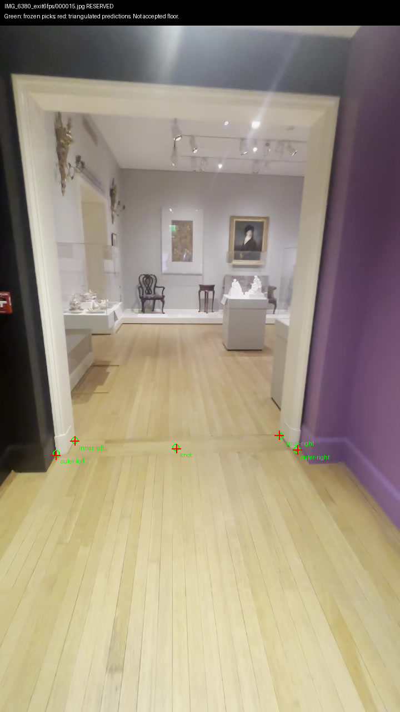
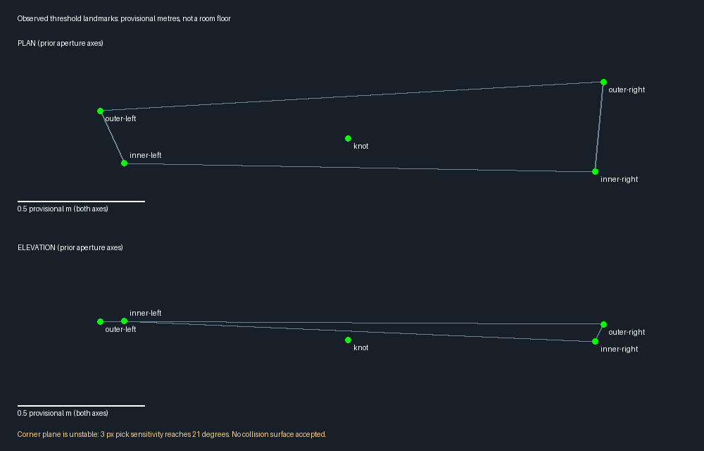
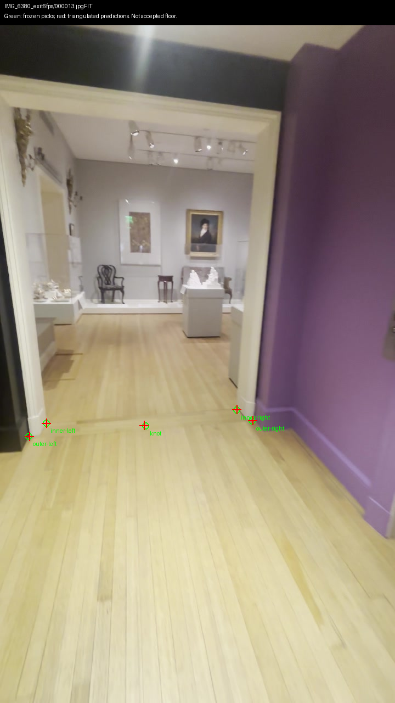
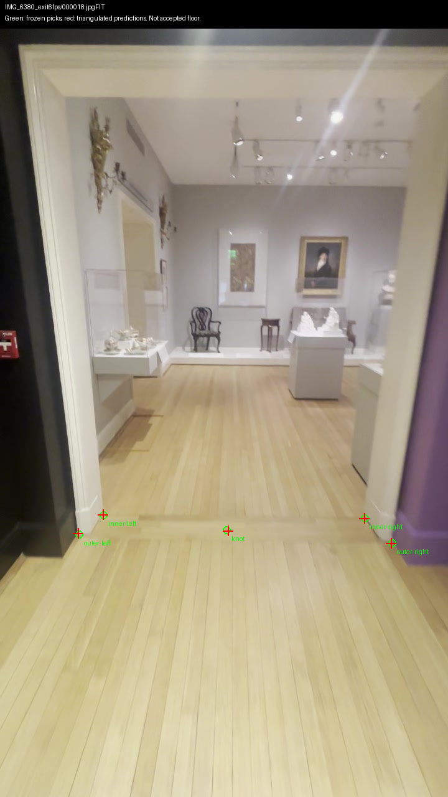
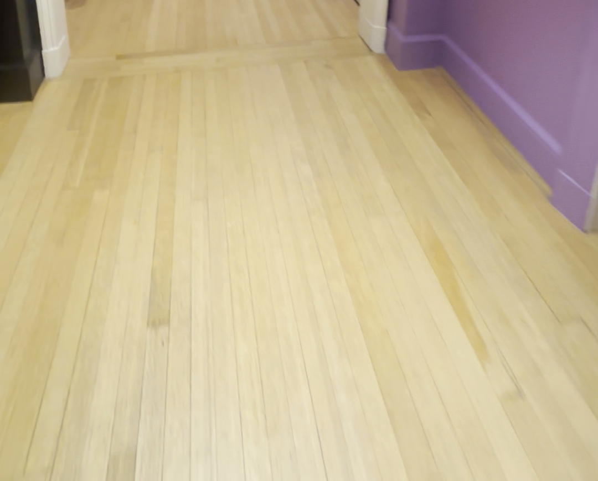
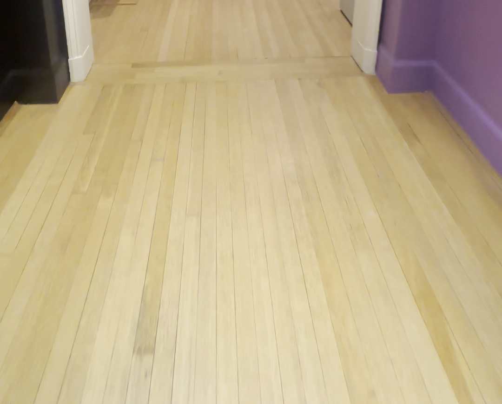
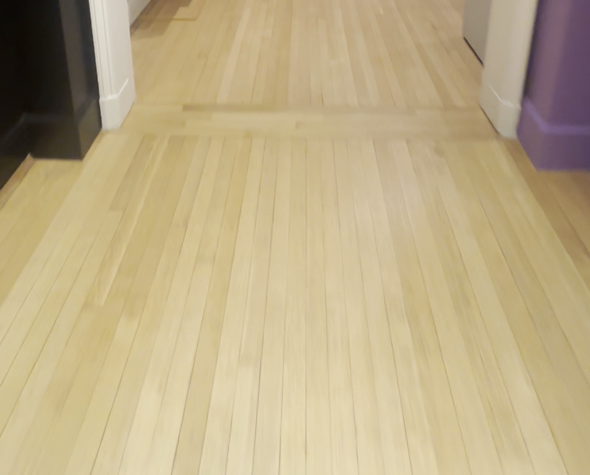

September 29, 2026 · 23:00 UTC tick · prototype evidence, not an accepted floor or museum walk.
Five manually marked landmarks predict the reserved frame within 3.40 pixels. However, the threshold knot is 4.75 provisional cm away from the plane fitted to four casing toes. The plane tilts up to 21.05° at the 95th percentile when picks are perturbed within ±3 pixels. A narrow threshold cannot establish the room floor.
The measured left/right jamb directions also disagree by 4.71°. No level floor, physical step or slope is inferred. Existing 49/69 held-out support and 46/69 split-point passes are nearby same-video checks, not independent capture accuracy.







Repository and synthetic measurement checks pass. Shell playtest repeats seven previous layout/pixel/timing failures. All images inspected. No browser navigation or gameplay performance claimed; 3D Viewer unchanged; $0 paid calls.
Measurements and sensitivity · Sources and hashes · CUDA extraction command · Shell results